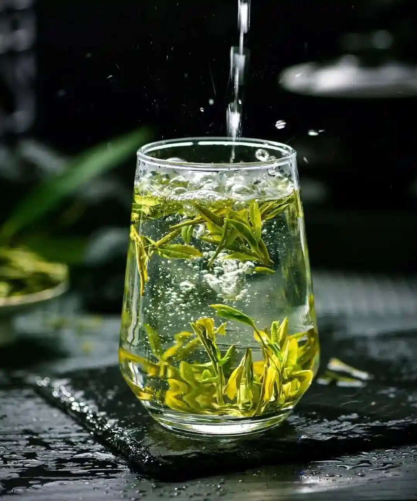
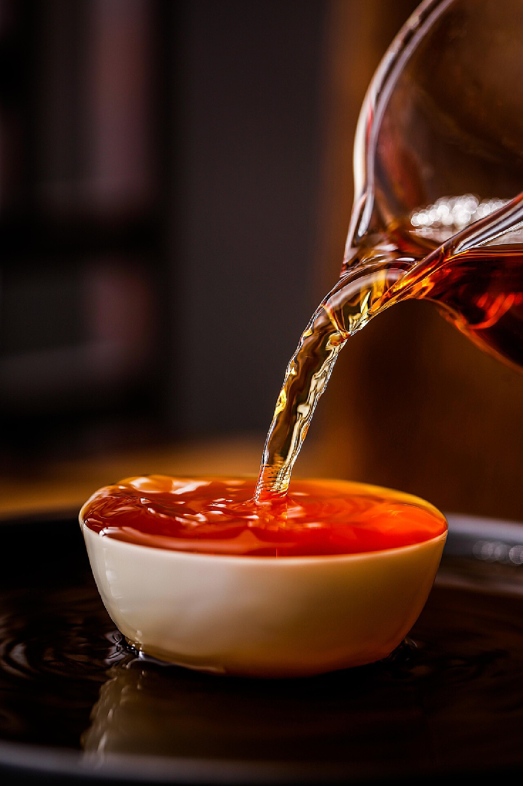
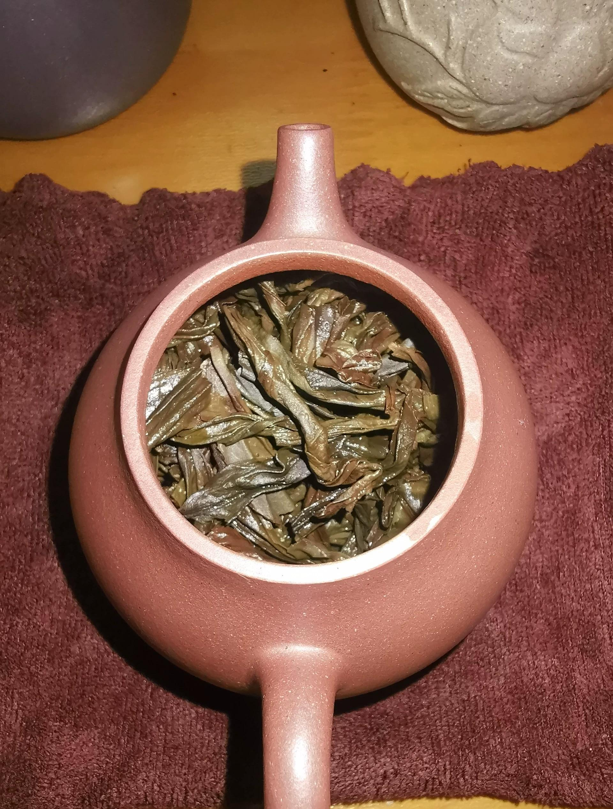
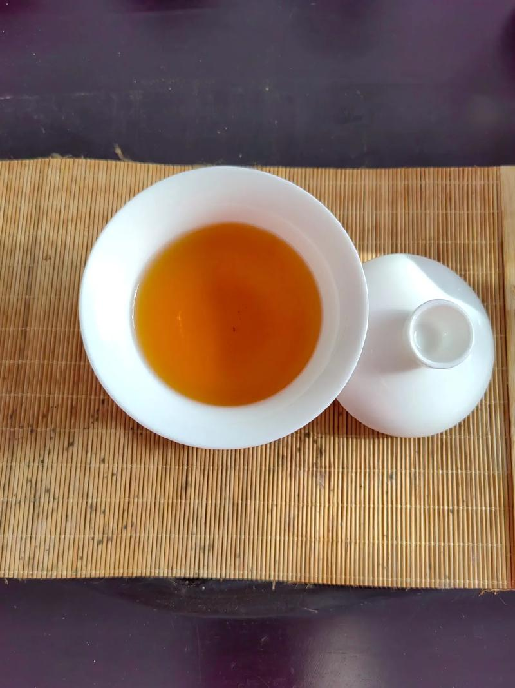
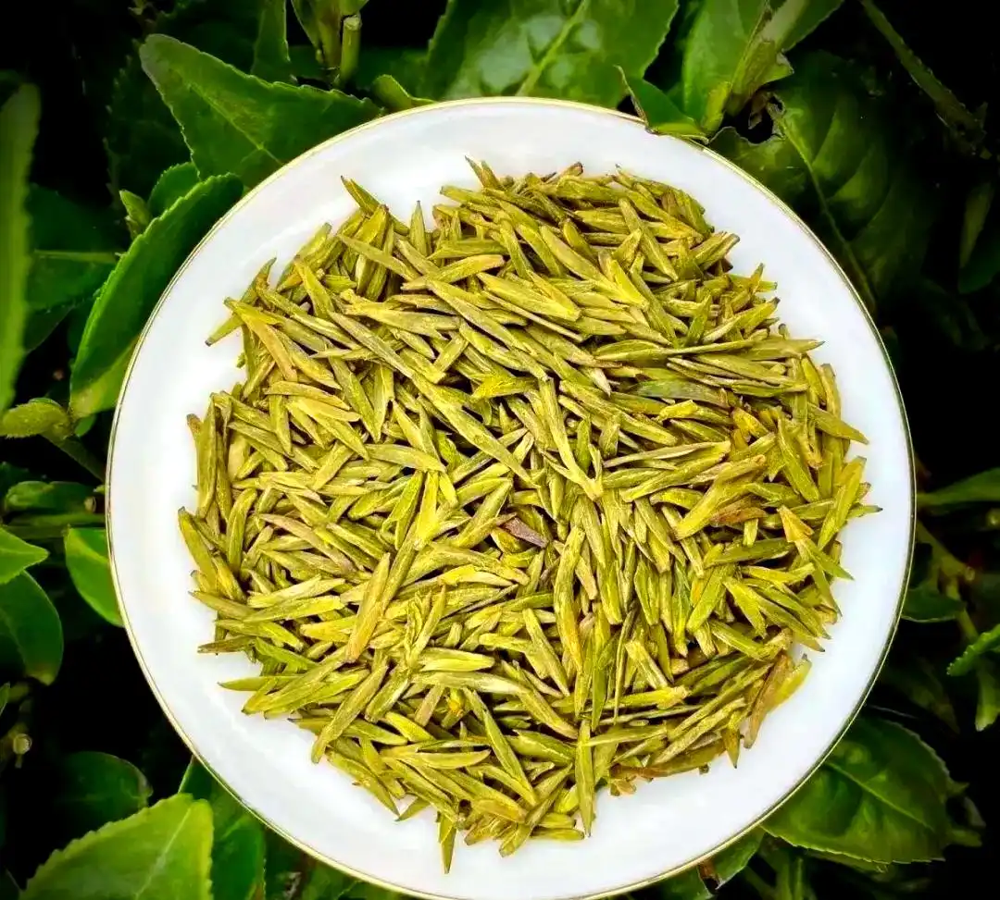
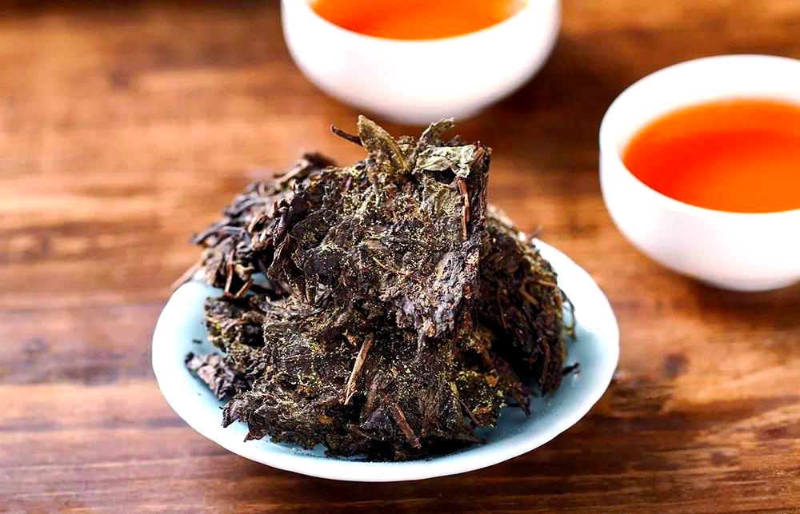

中国茶叶根据制作工艺和发酵程度的不同，分为绿茶、红茶、乌龙茶、白茶、黄茶和黑茶六大类。每一类茶都有其独特的加工工艺、品质特征和品饮价值。

绿茶是中国产量最高、饮用最广泛的茶类，属于不发酵茶，制作工艺主要包括杀青、揉捻和干燥三个步骤。由于未经发酵，绿茶最大限度地保留了茶叶中的天然物质，含有丰富的茶多酚、氨基酸、维生素等营养成分。
绿茶的品质特征为"清汤绿叶"，干茶色泽翠绿或黄绿，茶汤清澈明亮，香气清高鲜爽，滋味鲜醇回甘。根据杀青和干燥方式的不同，绿茶可分为炒青绿茶、烘青绿茶、蒸青绿茶和晒青绿茶四类。
绿茶性偏凉，适合夏季饮用，有清热解暑、提神醒脑、降脂减肥等功效。但由于含有较多茶多酚，胃寒者不宜过量饮用。

红茶是全发酵茶，制作工艺包括萎凋、揉捻、发酵和干燥四个主要步骤。发酵是红茶制作的关键环节，在酶的作用下，茶叶中的茶多酚发生氧化聚合反应，使茶叶由绿变红，形成红茶特有的品质特征。
红茶的品质特征为"红汤红叶"，干茶色泽乌黑油润，茶汤红艳明亮，香气甜醇馥郁，滋味浓厚鲜爽。由于经过充分发酵，红茶中的茶多酚含量大幅减少，刺激性降低，品性温和。
红茶是中国主要出口茶类，在国际市场上享有盛誉。红茶适合四季饮用，尤其适合冬季，有暖胃御寒、提神醒脑的功效。红茶既可以清饮，也可以加入牛奶、蜂蜜等调饮，风味独特。

乌龙茶又称青茶，属于半发酵茶，制作工艺复杂，主要包括萎凋、做青、炒青、揉捻和烘焙等步骤。做青是乌龙茶制作的关键工序，通过摇青和静置的反复进行，使茶叶边缘氧化变红，形成"绿叶红镶边"的独特特征。
乌龙茶的发酵程度介于绿茶和红茶之间（一般在10%-70%之间），兼具绿茶的清香和红茶的醇厚。其品质特征为外形条索粗壮，色泽青褐，茶汤金黄明亮，香气馥郁持久，滋味甘鲜爽口，回甘明显。
乌龙茶是中国特有的茶类，主要产于福建、广东和台湾地区。乌龙茶含有丰富的茶多酚和咖啡碱，有提神醒脑、降脂减肥、延缓衰老等功效。乌龙茶适合用小壶小杯冲泡，品味其独特的香气和滋味变化。

白茶是中国特有的茶类，属微发酵茶（发酵度5%-10%），制作工艺最简单，只有萎凋和干燥两个步骤，最大限度地保留了茶叶的天然物质。
白茶的品质特征为干茶满披白毫，色泽银白或灰绿，茶汤清澈淡黄，香气清幽，滋味鲜爽甘醇。著名品种有白毫银针、白牡丹、寿眉等。
了解更多
黄茶属轻发酵茶（发酵度10%-20%），制作工艺与绿茶相似，但增加了"闷黄"工序，使茶叶呈现黄色。这是黄茶区别于其他茶类的关键工艺。
黄茶的品质特征为干茶色泽黄润，茶汤黄亮，香气清悦，滋味醇厚甘爽。著名品种有君山银针、霍山黄芽、蒙顶黄芽等。
了解更多
黑茶属后发酵茶，制作工艺包括杀青、揉捻、渥堆和干燥等步骤，其中"渥堆"是黑茶特有的工序，通过微生物作用使茶叶发生复杂的化学变化。
黑茶的品质特征为干茶色泽乌黑油润，茶汤橙黄或红浓，香气纯正陈香，滋味醇厚回甘。著名品种有普洱茶、安化黑茶、六堡茶等。
了解更多